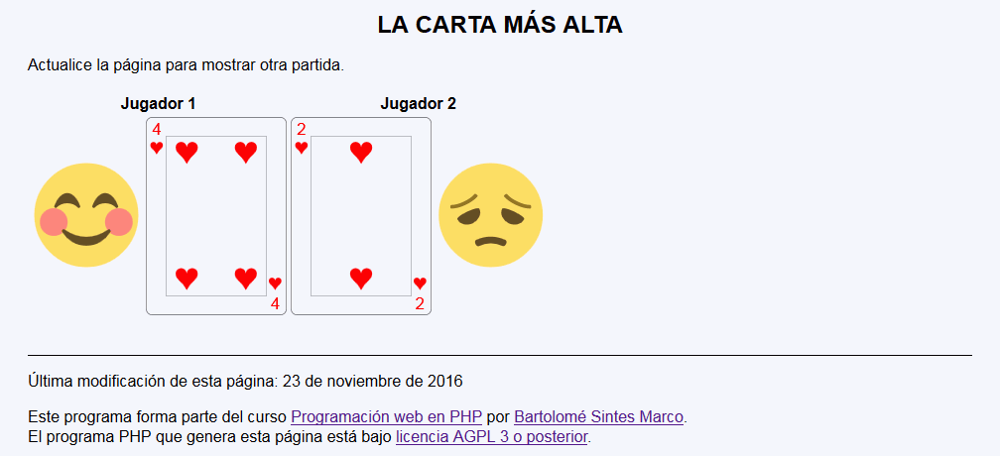
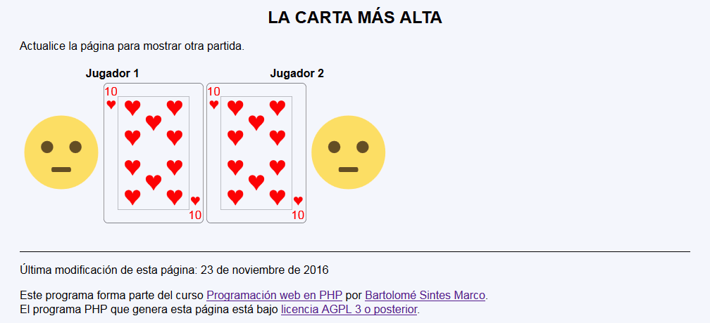
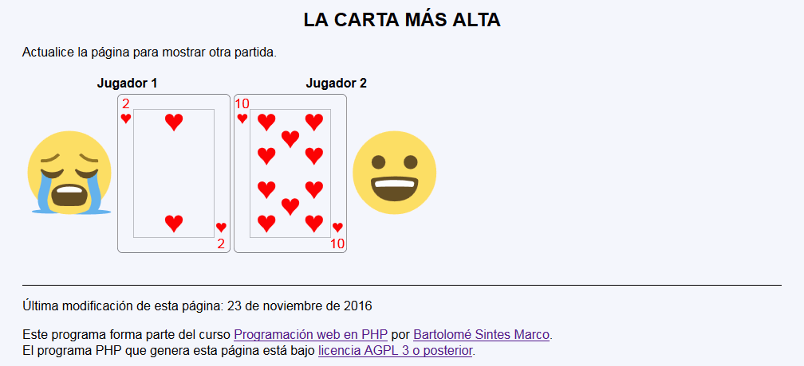

En este ejercicio se debe crear un programa que muestre una partida de un juego de cartas muy sencillo: La carta más alta.



<h1>La carta más alta</h1>
<p>Actualice la página para mostrar otra partida.</p>
<table>
<tr>
<th colspan="2">Jugador 1</th>
<th colspan="2">Jugador 2</th>
</tr>
<tr>
<td><span style="font-size: 7rem">😊</span></td>
<td><img src="img/c7.svg" alt="7" height="200" /></td>
<td><img src="img/c3.svg" alt="3" height="200" /></td>
<td><span style="font-size: 7rem">😞</span></td>
</tr>
</table>
Nota: El día del examen los alumnos no tienen acceso a este ejemplo, solamente tienen acceso a las capturas del apartado anterior.
Un ejemplo de programa puede probarse en la ventana siguiente: